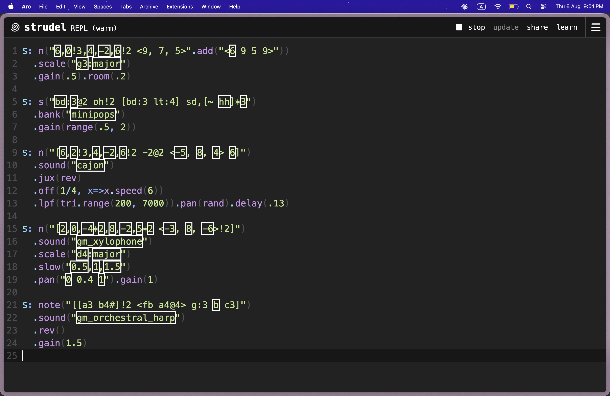
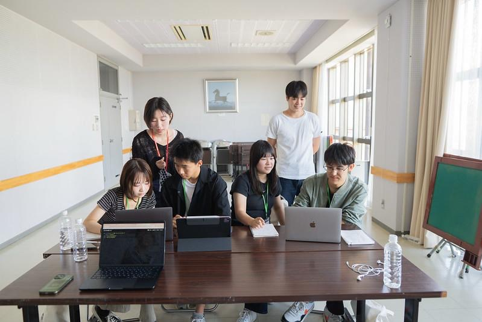
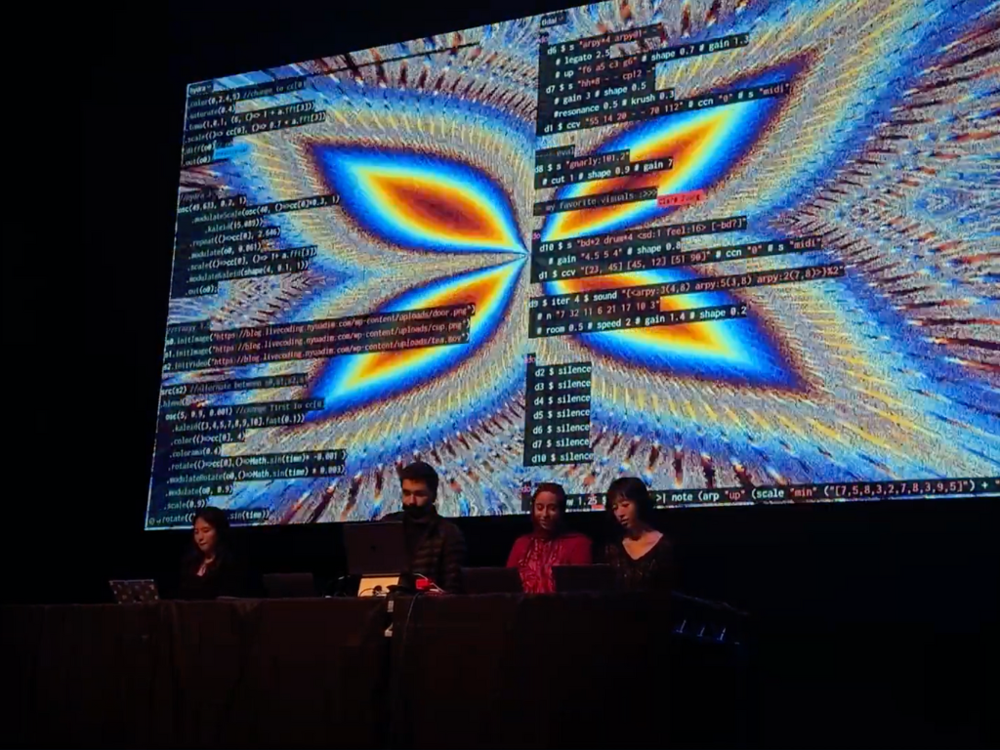
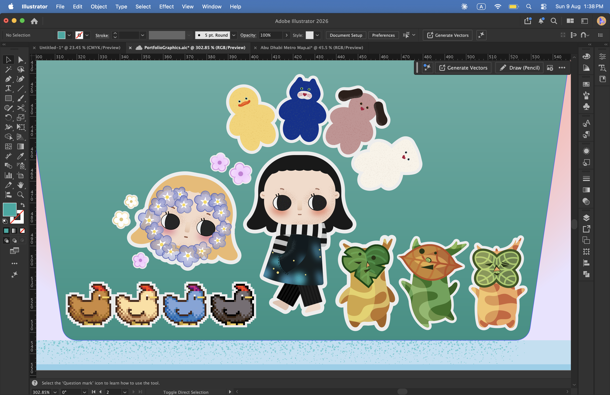
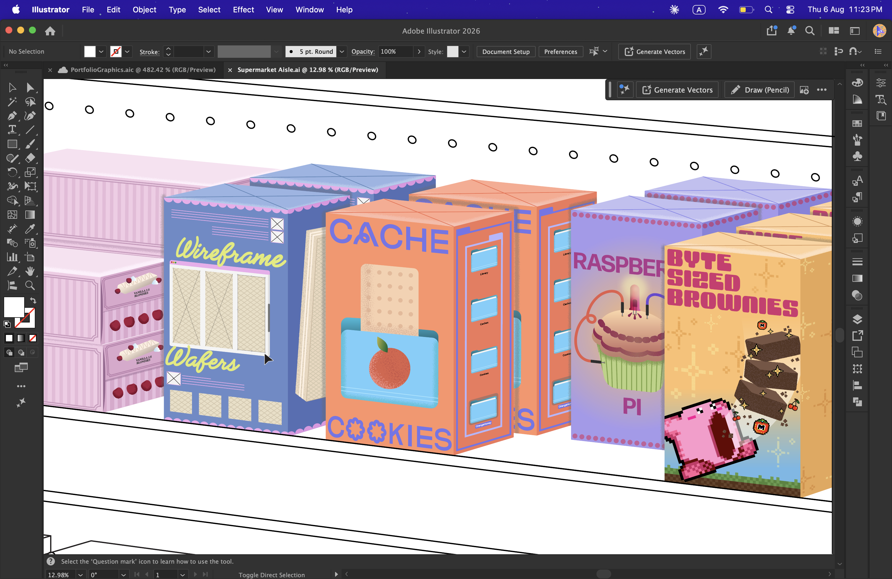
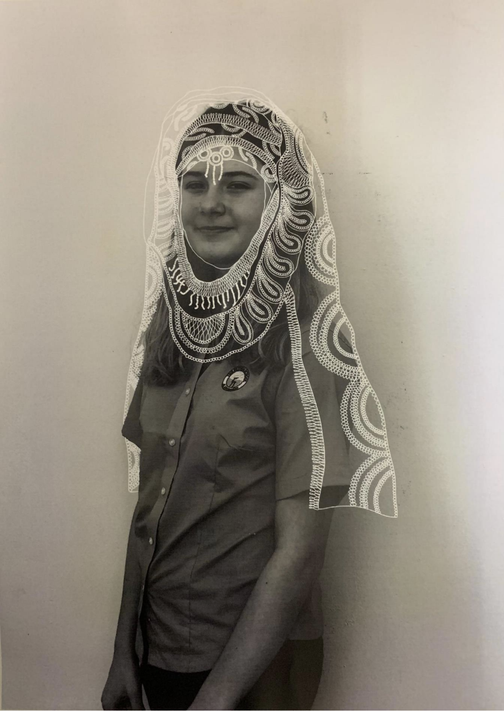
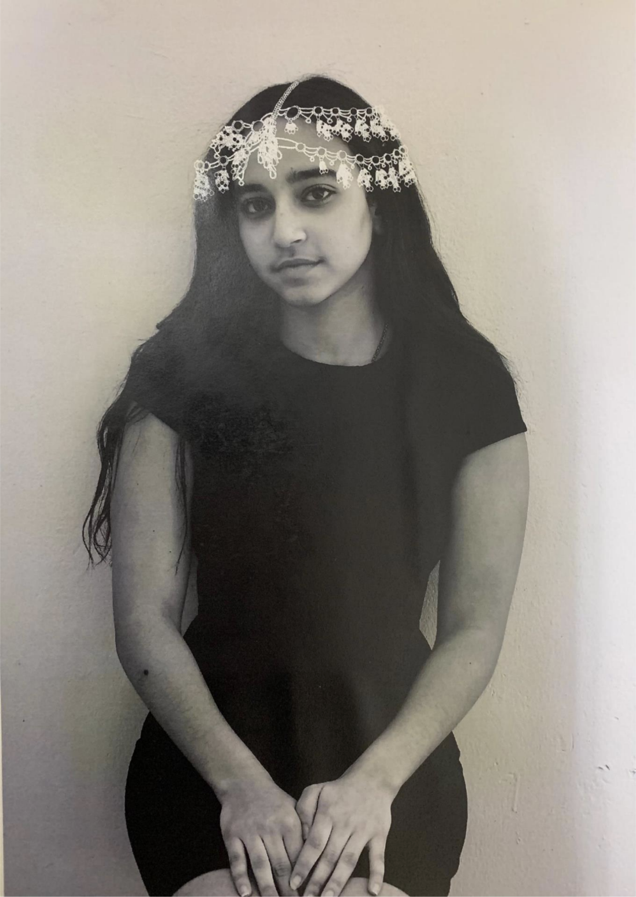
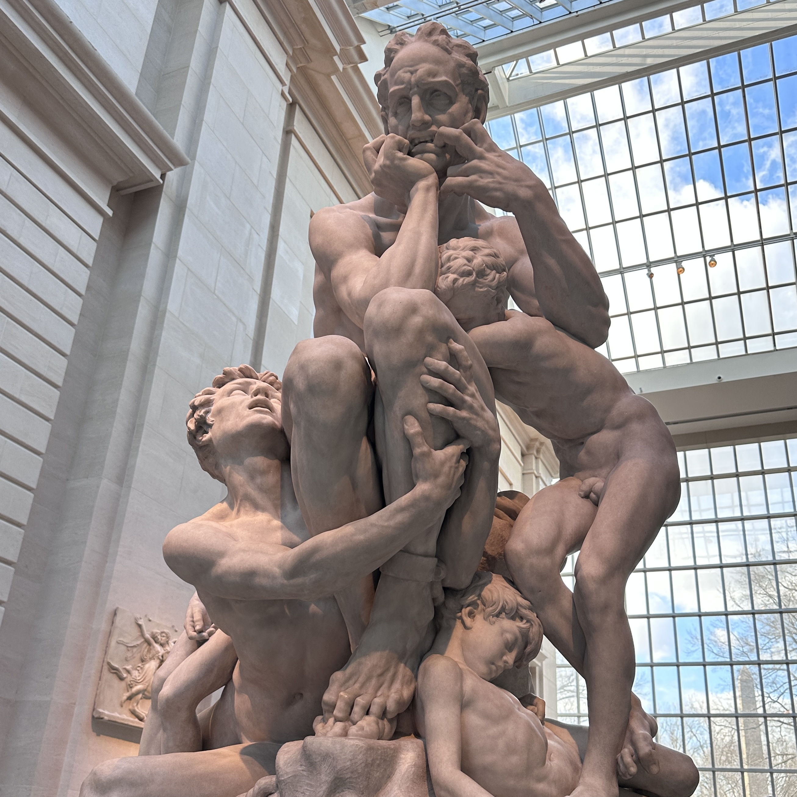
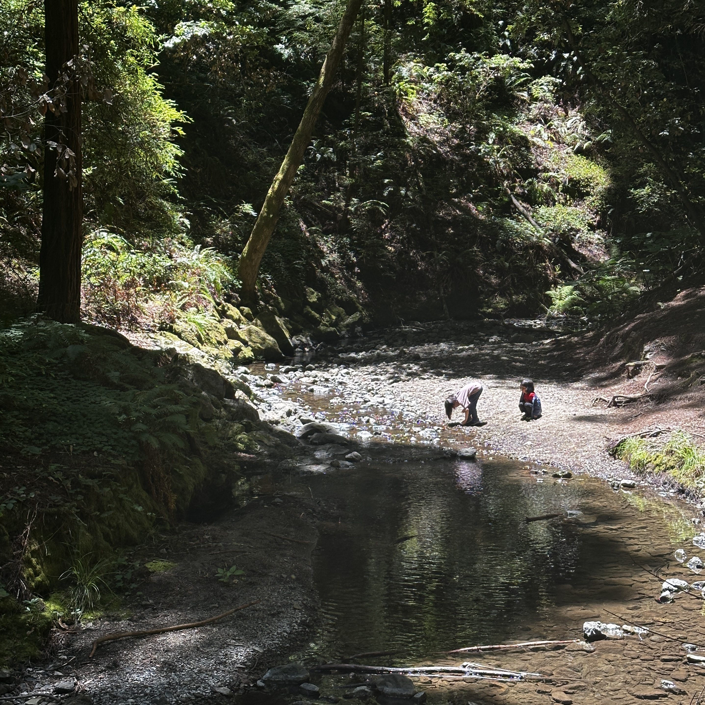

01
Bio
Currently fallen deep into vibe coding, with an exciting new project in the works! When I’m not designing, you’ll find me browsing for a new playlist, reading another fantasy novel, or learning a new language.
I’m always happy to connect, so feel free to reach out.
02
Skills & Softwares
UI/UX & Interaction Design · Visual Communication · Graphic Design · 3D Design · Human-centered Problem Solving
03
Off the Clock
Coding Music
Strudel
Atom–Hydra
Teaching Live Coding at HLAB
Live Coding Performance



Creativity
Drawing the Things I Like
Revamping Old Works
Digital Illustration#1
Digital Illustration#2




Traveling & Photography
 Tokyo, Team Lab
NY, Statue of Liberty
NY, MET
Shanghai
Qingdao, LaoShan
San Francisco
Tokyo, Team Lab
NY, Statue of Liberty
NY, MET
Shanghai
Qingdao, LaoShan
San Francisco

